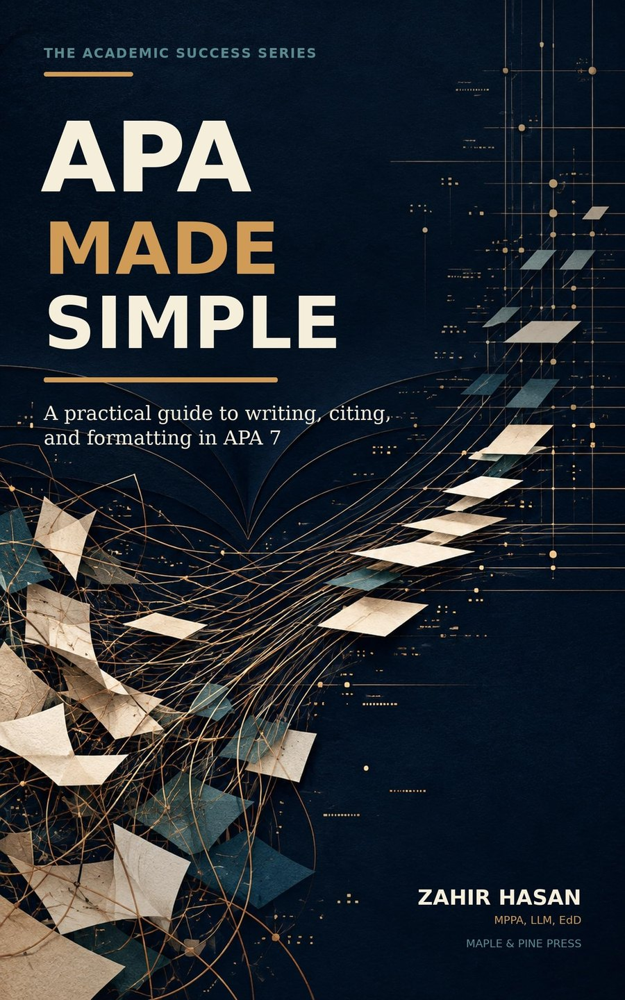

APA Made Simple
A Practical Guide to Writing, Citing, and Formatting in APA 7

APA Style should make research easier to follow – not harder to write.
APA Made Simple turns the seventh edition into a repeatable workflow for students, researchers, and instructors. Instead of asking you to memorize hundreds of reference patterns, it teaches one method – who, when, what, where – and shows you how to apply it to any source you will actually meet, from a journal article with a DOI to a Wikipedia entry, a court judgment, or a chatbot answer.
Inside, you will learn how to:
• set up student and professional papers correctly the first time
• write accurate in-text citations and references for the sources students use most
• paraphrase, quote, and synthesize without drifting into patchwriting
• present tables, figures, and statistics that readers can follow
• use citation software and generative AI responsibly – and check their output
• audit a paper in six passes before submission
Built to be used, not just read. Every chapter follows the same four moves – learn, see, try, check – and ends with a practice task and answer. The book includes a complete model student paper with page images showing exactly how a submitted APA paper should look, a 30-case Reference Clinic for the awkward sources citation generators get wrong, a quick desk guide of reference skeletons, and a full practice set with answer key.
Written by a university teacher who has marked thousands of APA papers, APA Made Simple is the guide designed to stay open beside you while you work.
Ebook and paperback · Maple & Pine Press
- Author
- Dr. Zahir Hasan
- Publisher
- Maple & Pine Press, Tokyo
- List
- Education & Practical Guides